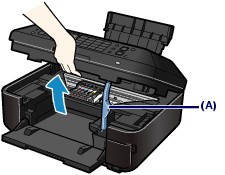
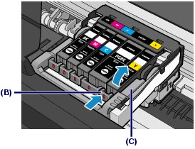
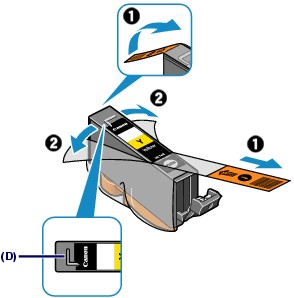
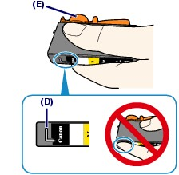
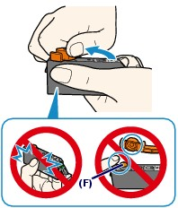
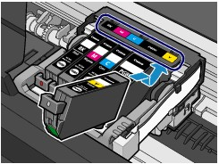
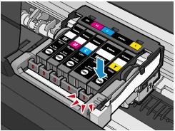
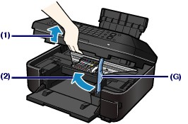

Contents > Routine Maintenance > Replacing an Ink Tank
C091
Replacing an Ink Tank
When remaining ink cautions or errors occur, the message will appear to inform you of the error.
Refer to "An Error Message Is Displayed on the LCD" in "Troubleshooting" of the on-screen manual: Advanced Guide, and take an appropriate action.
 Replacing Procedure
Replacing Procedure
When you need to replace ink tanks, follow the procedure below.
 Important Important
Handling ink
 If you remove an ink tank, replace it immediately. Do not leave the machine with ink tanks removed. If you remove an ink tank, replace it immediately. Do not leave the machine with ink tanks removed.
Use new ink tanks for replacement. Installing used ink tanks may cause the nozzles to clog. Furthermore, with such ink tanks, the machine will not be able to inform you when to replace the ink tanks properly.
Once an ink tank has been installed, do not remove it from the machine and leave it out in the open. This will cause the ink tank to dry out, and the machine may not operate properly when it is reinstalled. To maintain optimal printing quality, use an ink tank within six months of first use.
|
 Note Note
Color ink may be consumed even when printing a black-and-white document or when black-and-white printing is specified.
Every ink is also consumed in the standard cleaning and deep cleaning of the Print Head, which may be necessary to maintain the machine's performance. When an ink tank is out of ink, replace it immediately with a new one.
For details, see Tips on How to Use Your Machine.
|
Make sure that the power is turned on, and open the Paper Output Tray gently.
Lift the Scanning Unit (Cover), then hold it open with the Scanning Unit Support (A).
The Print Head Holder moves to the replacement position.

 Caution Caution
Do not hold the Print Head Holder to stop or move it forcibly. Do not touch the Print Head Holder until it stops completely.
|
Important
Do not place any object on the Document Cover. It will fall into the Rear Tray when the Document Cover is opened and cause the machine to malfunction.
If the Document Cover is open, you cannot open the Scanning Unit (Cover). Be sure to lift the Scanning Unit (Cover) with the Document Cover closed.
When opening or closing the Scanning Unit (Cover), do not touch the buttons and LCD on the Operation Panel. Doing so may result in an unexpected operation.
Do not touch the metallic parts or other parts inside the machine.
If the Scanning Unit (Cover) is left open for more than 10 minutes, the Print Head Holder moves to the right. In this case, close and reopen the Scanning Unit (Cover).
|
Note
The machine may make operating noise when the Print Head Holder moves to the replacement position.
|
Remove the ink tank with the lamp flashing fast.
Push the tab (B) and lift the ink tank to remove.
Do not touch the Print Head Lock Lever (C).

Important
Handle the ink tank carefully to avoid staining of clothing or the surrounding area.
Discard the empty ink tank according to the local laws and regulations regarding disposal of consumables.
|
Note
Do not remove two or more ink tanks at the same time. Be sure to replace ink tanks one by one when replacing two or more ink tanks.
For details on ink lamp flashing speed, see Checking the Ink Status.
|
Prepare the new ink tank.
(1) Take a new ink tank out of its package, remove the orange tape () completely, then remove the protective film () completely.

Important
Handle the ink tanks carefully. Do not drop or apply excessive pressure to them.
If the orange tape remains on the L-shape air hole (D), ink may splash or the machine may not print properly.
|
(2) Hold the ink tank with the orange protective cap (E) pointing up while being careful not to block the L-shape air hole (D).

(3) Slowly twist the orange protective cap (E) 90 degrees horizontally to remove it off.

Important
Do not push the sides of the ink tank. If you push the sides of the ink tank with the L-shape air hole (D) blocked, ink may splash.
Do not touch the inside of the orange protective cap (E) or the open ink port (F). The ink may stain your hands if you touch them.
Do not reattach the protective cap (E) once you have removed it. Discard it according to the local laws and regulations regarding disposal of consumables.
|
Install the new ink tank.
(1) Insert the front end of ink tank into the Print Head at a slant.
Make sure that the position of the ink tank matches the label.

(2) Press the mark (Push) on the ink tank until the ink tank snaps firmly into place.
Make sure that the ink lamp lights up red.

Important
You cannot print if the ink tank is installed in the wrong position. Be sure to install the ink tank in the correct position according to the label on the Print Head Holder.
You cannot print unless all the ink tanks are installed. Be sure to install all the ink tanks.
|
Close the Scanning Unit (Cover).
(1) Lift the Scanning Unit (Cover) slightly.
(2) Set the Scanning Unit Support (G) back to its original position.

(3) Close the Scanning Unit (Cover) gently.
Caution
When setting the Scanning Unit Support (G) back to its original position, be sure to hold the Scanning Unit (Cover) firmly, and be careful not to get your fingers caught.
|
Important
When opening or closing the Scanning Unit (Cover), do not touch the buttons and LCD on the Operation Panel. Doing so may result in an unexpected operation.
|
Note
If the error message appears after the Scanning Unit (Cover) is closed, refer to "Troubleshooting" in the on-screen manual: Advanced Guide.
When you start printing after replacing the ink tank, the machine starts cleaning the Print Head automatically. Do not perform any other operations until the machine completes the cleaning of the Print Head.
If printed ruled lines are misaligned or the print head position is misaligned, adjust the print head position.
See Aligning the Print Head.
The machine may make noise during operation.
|